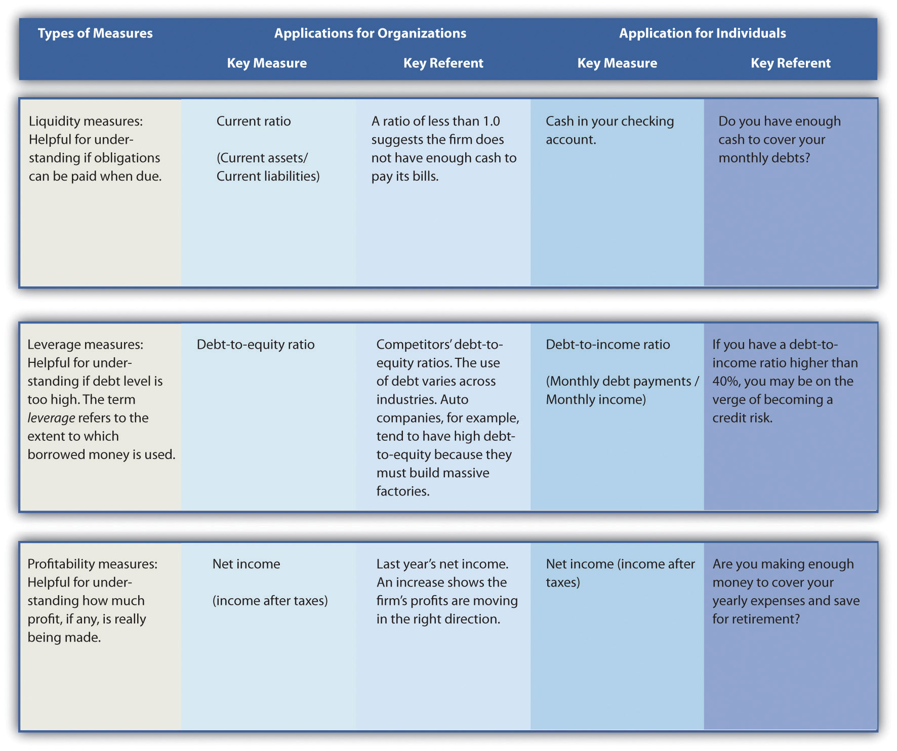

Organizational performanceHow well an organization is doing at reaching its vision, mission, and goals. refers to how well an organization is doing to reach its vision, mission, and goals. Assessing organizational performance is a vital aspect of strategic management. Executives must know how well their organizations are performing to figure out what strategic changes, if any, to make. Performance is a very complex concept, however, and a lot of attention needs to be paid to how it is assessed.
Two important considerations are (1) performance measures and (2) performance referents (Figure 2.5 "How Organizations and Individuals Can Use Financial Performance Measures and Referents"). A performance measureA metric such as profits, stock price, and sales along which organizations can be gauged. is a metric along which organizations can be gauged. Most executives examine measures such as profits, stock price, and sales in an attempt to better understand how well their organizations are competing in the market. But these measures provide just a glimpse of organizational performance. Performance referents are also needed to assess whether an organization is doing well. A performance referentA benchmark such as the industry average that is used to make sense of an organization’s standing along a performance measure. is a benchmark used to make sense of an organization’s standing along a performance measure. Suppose, for example, that a firm has a profit margin of 20 percent in 2011. This sounds great on the surface. But suppose that the firm’s profit margin in 2010 was 35 percent and that the average profit margin across all firms in the industry for 2011 was 40 percent. Viewed relative to these two referents, the firm’s 2011 performance is cause for concern.
Using a variety of performance measures and referents is valuable because different measures and referents provide different information about an organization’s functioning. The parable of the blind men and the elephant—popularized in Western cultures through a poem by John Godfrey Saxe in the nineteenth century—is useful for understanding the complexity associated with measuring organizational performance. As the story goes, six blind men set out to “see” what an elephant was like. The first man touched the elephant’s side and believed the beast to be like a great wall. The second felt the tusks and thought elephants must be like spears. Feeling the trunk, the third man thought it was a type of snake. Feeling a limb, the fourth man thought it was like a tree trunk. The fifth, examining an ear, thought it was like a fan. The sixth, touching the tail, thought it was like a rope. If the men failed to communicate their different impressions they would have all been partially right but wrong about what ultimately mattered.
Figure 2.5 How Organizations and Individuals Can Use Financial Performance Measures and Referents
This story parallels the challenge involved in understanding the multidimensional nature of organization performance because different measures and referents may tell a different story about the organization’s performance. For example, the Fortune 500 lists the largest US firms in terms of sales. These firms are generally not the strongest performers in terms of growth in stock price, however, in part because they are so big that making major improvements is difficult. During the late 1990s, a number of Internet-centered businesses enjoyed exceptional growth in sales and stock price but reported losses rather than profits. Many investors in these firms who simply fixated on a single performance measure—sales growth—absorbed heavy losses when the stock market’s attention turned to profits and the stock prices of these firms plummeted.
The story of the blind men and the elephant provides a metaphor for understanding the complexities of measuring organizational performance.
Image courtesy of Hanabusa Itcho, http://en.wikipedia.org/wiki/File:Blind_monks_examining_an_elephant.jpg.
The number of performance measures and referents that are relevant for understanding an organization’s performance can be overwhelming, however. For example, a study of what performance metrics were used within restaurant organizations’ annual reports found that 788 different combinations of measures and referents were used within this one industry in a single year.Short, J. C., & Palmer, T. B. 2003. Organizational performance referents: An empirical examination of their content and influences. Organizational Behavior and Human Decision Processes, 90, 209–224. Thus executives need to choose a rich yet limited set of performance measures and referents to focus on.
To organize an organization’s performance measures, Professor Robert Kaplan and Professor David Norton of Harvard University developed a tool called the balanced scorecardAn approach to assessing performance that targets managers’ attention on four areas: (1) financial, (2) customer, (3) internal business process, and (4) learning and growth.. Using the scorecard helps managers resist the temptation to fixate on financial measures and instead monitor a diverse set of important measures (Figure 2.6 "Beyond Profits: Measuring Performance Using the Balanced Scorecard"). Indeed, the idea behind the framework is to provide a “balance” between financial measures and other measures that are important for understanding organizational activities that lead to sustained, long-term performance. The balanced scorecard recommends that managers gain an overview of the organization’s performance by tracking a small number of key measures that collectively reflect four dimensions: (1) financial, (2) customer, (3) internal business process, and (4) learning and growth.Kaplan, R. S., & Norton, D. 1992, February. The balanced scorecard: Measures that drive performance. Harvard Business Review, 70–79.
Financial measures of performance relate to organizational effectiveness and profits. Examples include financial ratios such as return on assets, return on equity, and return on investment. Other common financial measures include profits and stock price. Such measures help answer the key question “How do we look to shareholders?”
Financial performance measures are commonly articulated and emphasized within an organization’s annual report to shareholders. To provide context, such measures should be objective and be coupled with meaningful referents, such as the firm’s past performance. For example, Starbucks’s 2009 annual report highlights the firm’s performance in terms of net revenue, operating income, and cash flow over a five-year period.
Customer measures of performance relate to customer attraction, satisfaction, and retention. These measures provide insight to the key question “How do customers see us?” Examples might include the number of new customers and the percentage of repeat customers.
Starbucks realizes the importance of repeat customers and has taken a number of steps to satisfy and to attract regular visitors to their stores. For example, Starbucks rewards regular customers with free drinks and offers all customers free Wi-Fi access.Miller, C. 2010, June 15. Aiming at rivals, Starbucks will offer free Wi-Fi. New York Times. Section B, p. 1. Starbucks also encourages repeat visits by providing cards with codes for free iTunes downloads. The featured songs change regularly, encouraging frequent repeat visits.
Internal business process measures of performance relate to organizational efficiency. These measures help answer the key question “What must we excel at?” Examples include the time it takes to manufacture the organization’s good or deliver a service. The time it takes to create a new product and bring it to market is another example of this type of measure.
Organizations such as Starbucks realize the importance of such efficiency measures for the long-term success of its organization, and Starbucks carefully examines its processes with the goal of decreasing order fulfillment time. In one recent example, Starbucks efficiency experts challenged their employees to assemble a Mr. Potato Head to understand how work could be done more quickly.Jargon, J. 2009, August 4. Latest Starbucks buzzword: “Lean” Japanese techniques. Wall Street Journal, p. A1. The aim of this exercise was to help Starbucks employees in general match the speed of the firm’s high performers, who boast an average time per order of twenty-five seconds.
Learning and growth measures of performance relate to the future. Such measures provide insight to tell the organization, “Can we continue to improve and create value?” Learning and growth measures focus on innovation and proceed with an understanding that strategies change over time. Consequently, developing new ways to add value will be needed as the organization continues to adapt to an evolving environment. An example of a learning and growth measure is the number of new skills learned by employees every year.
One way Starbucks encourages its employees to learn skills that may benefit both the firm and individuals in the future is through its tuition reimbursement program. Employees who have worked with Starbucks for more than a year are eligible. Starbucks hopes that the knowledge acquired while earning a college degree might provide employees with the skills needed to develop innovations that will benefit the company in the future. Another benefit of this program is that it helps Starbucks reward and retain high-achieving employees.
Ralph Waldo Emerson once noted, “Doing well is the result of doing good. That’s what capitalism is all about.” While the balanced scorecard provides a popular framework to help executives understand an organization’s performance, other frameworks highlight areas such as social responsibility. One such framework, the triple bottom lineAn approach to assessing performance that emphasizes the concerns of people (social responsibility) and the planet (environmental sustainability) in addition to profit., emphasizes the three Ps of people (making sure that the actions of the organization are socially responsible), the planet (making sure organizations act in a way that promotes environmental sustainability), and traditional organization profits. This notion was introduced in the early 1980s but did not attract much attention until the late 1990s.
The triple bottom line emphasizes the three Ps of people (social concerns), planet (environmental concerns), and profits (economic concerns).
Reproduced with permission from [citation redacted per publisher request].
In the case of Starbucks, the firm has made clear the importance it attaches to the planet by creating an environmental mission statement (“Starbucks is committed to a role of environmental leadership in all facets of our business”) in addition to its overall mission.Our Starbucks mission statement. Retrieved on March 31, 2011, from http://www.starbucks.com/about-us/company-information/mission-statement. Accessed March 31, 2011. In terms of the “people” dimension of the triple bottom line, Starbucks strives to purchase coffee beans harvested by farmers who work under humane conditions and are paid reasonable wages. The firm works to be profitable as well, of course.